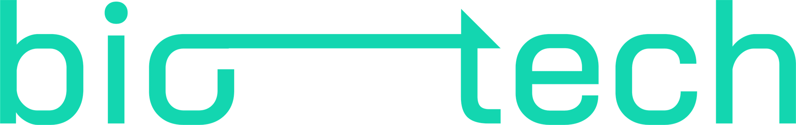
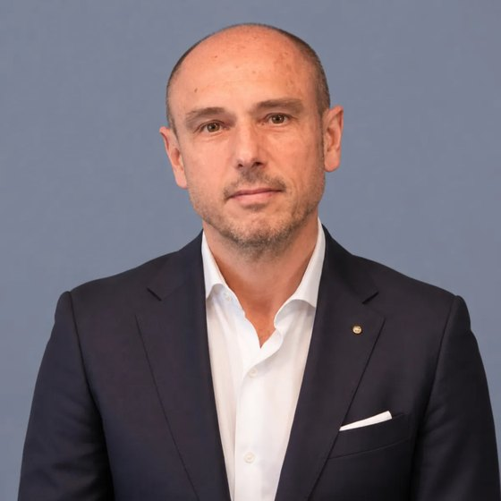
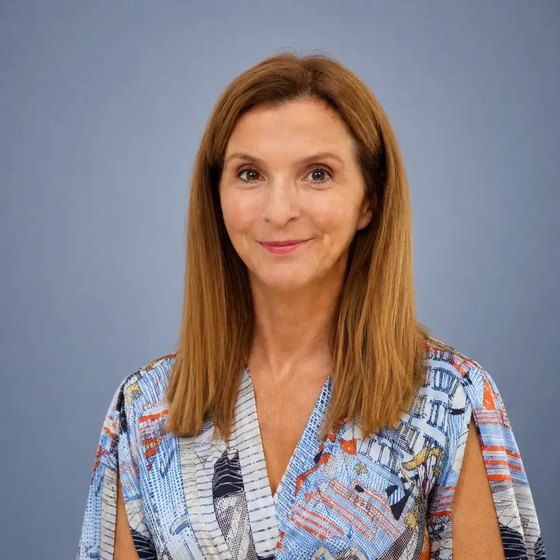
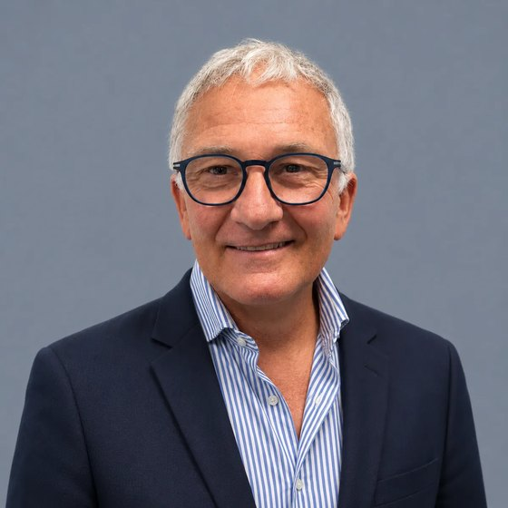

We build software for hospitals, doctors and pharmacists.
Each product starts from a specific problem in a hospital, a health authority or a medical society.
We are engineers, biostatisticians, clinicians and lawyers, working between Zurich and Taranto, with experience at ETH Zurich, Harvard and MIT. We work with hospitals, health authorities and medical societies on a problem they already have, often first as a paid consulting project.
When a solution works, we turn it into a product that other institutions can buy.
We started in April
Products so far
Countries: Italy, Switzerland, the US
For oncology departments.
With ASL VCO, in Piedmont.
Pilot runningFor hospital pharmacies and regions.
Tested on data from Regione Abruzzo.
PrototypeFor rheumatology patients.
Designed with the Italian College of Rheumatologists.
Interface prototypeFor people leaving prison.
With the University of Maryland, Baltimore.
Interface prototypeFoundation board: Guido Putignano, Domenica Leone and Carmine Pisano.
Biomedical engineer, with experience at ETH Zurich, Harvard and MIT.
Lawyer. Runs operations, legal and compliance.
Biostatistician with 10 years of experience.
Designer. Shapes our visual identity and communications.

Looks after finance, grants and reporting.

Rheumatologist, Italian College of Rheumatologists (CReI)

Market access at Gilead Sciences
Managing Director, 3B Future Health Fund
Oncologists and rheumatologists. They lose hours to paperwork and see chronic patients only every few months.
Frankura and BonnieHospital pharmacy directors and regional pharmacy services. They manage large drug budgets, often in spreadsheets.
VIS Pharma CompassLocal health authorities, hospitals and regional governments. They hold the budget, so they are the ones who sign the contract.
All productsMedical societies and universities are partners in some projects. The Italian College of Rheumatologists is working with us on the design of the Bonnie study, and the University of Maryland, Baltimore runs Skippy with us.
For oncology departments. We have a pilot agreement with ASL VCO, in Piedmont, and we are running the pilot.
Our estimate, based on ASL VCO's own volumes.
Most of the data is typed by hand and copied from one form to the next.
Records the visit and fills in the intake form
Copies the data into the tumour board file
Prepares a one-page summary of each case for the board, with the options suggested by the AIOM and ESMO guidelines. The board confirms, changes or rejects them.
Produces a standard report for GPs and other hospitals
It runs on top of the hospital's existing software.
The global market by 2030, up from $1.1 billion in 2025.
The nearby market for AI-powered clinical documentation reaches about $14 billion in the same year.
The public institutions that buy software like ours: 198 health authorities and hospital trusts in Italy, and 20 health clusters in Saudi Arabia.
At €50,000 to €150,000 per licence, that is €11 to €33 million, plus a yearly fee.
Our target for the next three years, worth €1 to €3 million in licences.
Four Italian institutions are already talking to us: ASL Salerno, Ospedale Miulli, ASL Taranto and ASL Caserta.
Sources: MarketsandMarkets 2026, The Business Research Company 2026, CERGAS Bocconi OASI Report 2025, Health Holding Company.
For hospital pharmacies and regions. A working prototype, not yet under contract.
spent above the legal ceiling in 2025 on the medicines the Italian public health system buys directly, up from €4.0 billion in 2024 (AIFA).
Pharmacy teams have the data but work in spreadsheets, so they spot savings late.
Puts purchase and dispensing data in one place and checks it against the accounts
Flags patents about to expire and biosimilars that are available but not used
Compares health authorities in the same region, medicine by medicine
It only reads aggregated data, so it is not a medical device.
dispensing records
of yearly spend
For a region with four health authorities
For rheumatology patients, designed with the Italian College of Rheumatologists (CReI).
A patient with rheumatoid or psoriatic arthritis sees the rheumatologist every three to six months. Flares, side effects and stopped treatments in between are rarely written down, so each visit starts from what the patient remembers.
Every week the patient answers a few questions in about two minutes, with no account to create
Bonnie, a small cartoon skeleton, reminds them and keeps them going. It reacts to the fact that they answered, never to what they said
Before the visit, the rheumatologist sees how the patient has been, week by week
About 500 rheumatologists, in hospitals and in the community, belong to CReI.
We are designing the study with them. Called PROSSIMA, it would follow patients with
CReI would own the study and the data. We build and run the software. We built the prototype at our own cost before asking them to commit.
Bonnie is built on the Frankura platform. It is not a medical device.
For people leaving prison, with the EMBRACE Initiative at the University of Maryland, Baltimore.
People coming out of prison are usually handed a list of phone numbers. Programmes count a referral as soon as it is sent, even if the person never gets help.
Helps the person take the next practical step, such as getting an ID or applying for benefits
Connects them with the right service or staff member
Follows up until the step is done, and tells staff what got in the way
Pilot
Baltimore
Maryland
Other programmes
EMBRACE owns the programme and the data. We build and run the software. It is our first project in the United States.
A hospital, region or medical society comes to us with a problem. We work on it as a paid project, or start with a paid analysis like the €9,000 one for VIS. We build a first prototype at our own cost, and the full product only once someone is paying for the work.
What we build goes into one shared platform, Frankura: recording clinical data, patient consent, audit trails, the AI layer and data storage in Europe. New products start from there, and Bonnie is built on it.
Once a product works for one client, we offer it to the next. ASL VCO follows the intake and tumour board model of the Piedmont oncology network, so the same workflow applies across the region. A new region for VIS needs a data adapter, not a new system.
Finds the clinical needs, and does the research and consulting.
A dedicated company, which we are setting up, will sell and run the software in hospitals.
With ASL VCO for Frankura. We are running the pilot.
VIS tested on real data from Regione Abruzzo.
ASL Salerno, Ospedale Miulli, ASL Taranto and ASL Caserta.
And about €120,000 in advanced pipeline, as of June 2026.
Map: ISTAT boundaries, CC BY 4.0.
Each project is listed on bioergotech.org, with what it has shown and what it has not.
In Cancers, 2026, with Daniela Marotto. A national cohort of 356,022 patients from Italian hospital discharge records. Cancer risk is highest in the first year after diagnosis.
An algorithm that links genotype, lifestyle and socioeconomic data to cancer incidence at population level. Delivered within CODIGE, part of the AGE-IT programme.
Mathematical models of engineered cell therapies, at ETH Zurich. Review published in Frontiers in Immunology, 2025.
Methods for diseases too rare for standard statistics, starting with propionic acidemia in Saudi Arabia.
Guido Putignano works at ETH Zurich's Department of Biosystems Science and Engineering. Our lab is in Taranto.
Testing cancer drugs on organoids grown from a patient's own tumour. A gastric cancer project at the University of Zurich, led by Giovanni Papa.
Patients with gastric cancer can respond very differently to the same treatment. Genetic profiling finds relevant changes, but it does not always show which available drug will work for a given patient.
A tumour biopsy is grown into organoids, small 3D models of the patient's tumour
Automated screening tests them against a panel of cancer drugs used in the clinic
The drug responses are read together with the tumour's molecular profile
OncoTarget and Frankura are separate projects. They could meet in future at the tumour board, where treatment is chosen.
Giovanni Papa (UZH, Institute of Molecular Cancer Research) leads, with Prof. Anne Müller as mentor. Guido Putignano builds the data model, the analysis pipeline and the quality criteria.
We test each product where it is easiest to prove, keep what works, and offer that to Saudi health clusters.
Does it work for thousands of people? With the University of Maryland, Baltimore.
Does the science hold up? With ETH Zurich and the University of Zurich.
Do public hospitals buy it and use it? With ASL VCO, Regione Abruzzo and CReI.
We offer what passed to health clusters, starting with one pilot through ScaleX.
Paid analyses of each cluster's own data first, as we do with VIS in Italy. Then licences and yearly fees. We aim to be profitable in Saudi Arabia by the end of 2027.
Testing in Italy, the US and Switzerland
ScaleX, a first pilot and first contract. Profitable in Saudi Arabia by the end of the year
Five Saudi health clusters
Ten clusters, half of the Kingdom
All 20 clusters, over 20 million people
Our goal for 2030: our products in use in all 20 Saudi health clusters and in the Italian health systems we already work with, together about 24 million people.
Skippy adds 2,000 people leaving prison in Maryland.
Residents on 1 January 2025 (ISTAT). The 20 Saudi health clusters serve over 20 million people (Health Holding Company).
We want to open in Riyadh with products that are already being tested in Italian public health. Saudi public healthcare is moving to 20 regional health clusters, each running the hospitals and clinics for about 1 million people. That is close to how the Italian health authorities we work with are organised.
Frankura, for oncology departments
VIS Pharma Compass, for hospital drug budgets
Bonnie, for patients with chronic conditions between visits
An introduction to a health cluster for a first pilot
Advice on Saudi rules for clinical software and health data
Advice on the fastest route to a profitable Saudi operation
Introductions to investors
Lab access at KAUST and a desk in Riyadh for our team
A paid analysis of the cluster's own data
The software running
A joint review
Four products, a pilot running with ASL VCO, and a plan to reach all 20 Saudi health clusters by 2030.